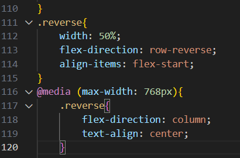
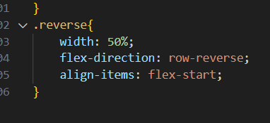
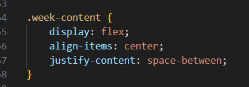
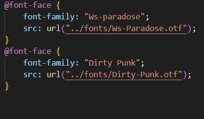

Workshop Activity:
Fluid Design with @Media Queries
Week Overview & What We Did
This workshop focused on making responsive web designs that adapt to different screen sizes. We explored:
- Sketching a mobile version of our desktop website design.
- Annotating design decisions to understand priority changes.
- Using @media queries and flex/grid layouts to make the design adaptable.
- Live coding demo on making websites responsive.
Step 1: Mobile Wireframe & Design Priorities
Sketching the Mobile Version:
- We redesigned our desktop layout to fit smaller screens.
- The goal was to simplify navigation, resize elements, and improve readability.
Step 2: Live Coding Demo – Making It Responsive
1. We used CSS @media queries to apply styles based on screen size:

2. We learned how to use flexbox and grid to reflow content dynamically.


3. We learned how to import custom fonts for a more visually appealing design.
